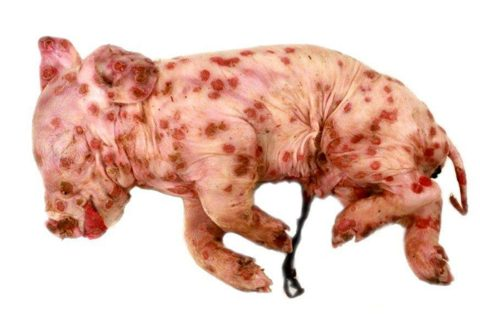

1
大方向與重點摘要
豬痘的大方向
- 這是什麼病
- 豬痘病毒（Swinepox virus, SwPV）造成的急性、輕微、通常自行痊癒的皮膚病：局部出現痘疹（pox）病灶，3–4 月齡以下的幼豬較嚴重。全球分布，通常和衛生條件差有關。
- 為什麼重要
- 經濟影響可忽略，但它是水疱性疾病（FMD、SVD、SVV、VES、VS）的鑑別診斷，也是國考每隔幾年就出現的題目（講義附 5 題）。
- 這章要抓的重點
- 容易混淆
-
- 豬痘是嗜酸性「質內」包涵體（細胞質）；假性狂犬病、PCMV 是核內包涵體（嗜鹼性或嗜酸性核內）。
- 幼豬比成豬嚴重；成豬較輕、病灶多在側腹、腹下、四肢、鼠蹊與耳。
- 不是人畜共通（人的痘病毒是別種）。
必考要能寫出來理解懂原理，不必逐字背看過知道有這件事就好
| 疾病 | 病原 | 好發 | 一句話特徵 | 代表圖 |
|---|---|---|---|---|
| 豬痘 | SwPV（Suipoxvirus） | <3–4 月齡幼豬 | 痘疹→膿疱→結痂；發病率高、死亡率低 |  新生仔豬紅斑中心潰瘍（p.11） |
閱讀說明
內容以老師講義為主。講義附的國考題沒有標答案，答案是依講義內容推得，並註明依據頁碼；標「補充」的是講義以外的延伸。點任何「p.N」可在右側開啟講義對照。
2
豬痘：病毒、流行病學與致病 Etiology, Epidemiology & Pathogenesis
豬痘是「皮膚破損＋豬蝨」的病：病毒從破口進入棘層角質細胞，在細胞質裡複製。
病毒必考
- 豬痘病毒（SwPV）：Suipoxvirus 屬，Chordopoxvirinae 亞科。
- 大型磚塊狀、有封套，約 240–310 nm。
- 線狀雙股 DNA，146 kb，中央保守編碼區、兩端為反向末端重複序列。
- 兩種感染性顆粒：成熟病毒顆粒（MV）與細胞外病毒顆粒（EV）。
- SwPV 與其他痘病毒抗原性不同；基因穩定。
| 成熟病毒顆粒 MV | 細胞外病毒顆粒 EV | |
|---|---|---|
| 環境抵抗力 | 高，>95% | 脆弱，<5% |
| 膜 | 一層內質網來源的膜 | 多一層 Golgi 來源的膜 |
| 釋出 | 細胞溶解時釋出 | 細胞膜融合，用於病毒在細胞間擴散 |
流行病學必考
- 1929 年北美首次報告；豬是 SwPV 唯一的自然宿主 → 沒有人畜共通潛力。
- SwPV 無法在兔與天竺鼠劃傷的皮膚造成病灶，也不感染牛與兔的腎細胞。
- 過去也曾報告牛痘病毒（vaccinia virus）與豬痘樣病灶有關（天花根除後）；現在 SwPV 似乎是唯一原因。
傳播必考
- 豬之間最常見的是豬蝨（Haematopinus suis）叮咬。
- 螫蠅（Stomoxys calcitrans）與蚊子也可能是機械性媒介。
- 直接接觸；垂直傳播。
致病機制必考
- 病毒經皮膚破損處進入宿主，在棘層（stratum spinosum）角質細胞（keratinocytes）的細胞質內複製。
- 病毒血症的途徑仍不清楚；曾推測先天感染來自病毒血症的母豬，但從感染豬血液沒有分離到病毒。
3
豬痘：臨床、病變、診斷與防治 Clinical Signs, Lesions, Diagnosis & Control
看到仔豬或豬皮膚長痘疹、環境又有豬蝨，就想到豬痘；確認靠電顯與組織病理。
臨床症狀必考
- 症狀依年齡而異。病灶演變：斑疹（macule）→ 丘疹（papule）→ 水疱（vesicle）→ 臍窩狀膿疱（umbilicated pustule）→ 結痂（crust）。
- 幼豬可有輕微體溫上升與食慾下降。
- 病灶部位：側腹、腹下、腿、鼠蹊與耳；成豬較少出現在眼周臉部。
- 先天感染：病灶可遍布全身；可能死產或新生仔豬幾天內死亡，但母豬可看起來正常。
- 發病率可以很高，但死亡率低；病毒造成的皮膚變化可能併發續發性皮膚炎。
病變必考
- 典型組織病變：棘層角質細胞的水腫變性（hydropic degeneration），出現在丘疹期。
- 腫脹的感染細胞內有嗜酸性細胞質內包涵體（eosinophilic intracytoplasmic inclusion bodies），細胞核空泡化。
- 表皮細胞破裂融合形成小水疱；之後發炎細胞浸潤真皮，水疱轉成膿疱。
診斷必考
- 推定診斷：看到典型皮膚痘疹，特別是在衛生條件差時。
- 電子顯微鏡與組織病理可確認。
- 病毒分離：初代豬腎細胞或 PK15 細胞株，需盲傳；核酸：PCR、qPCR。
- 血清學：ELISA、沉澱抗體試驗、免疫電滲泳（IEOP）；病毒中和抗體試驗要小心：豬不產生高效價中和抗體，陰性結果要謹慎解讀。
- 鑑別診斷：牛痘病毒；水疱性疾病（FMD、SVD、SVV、VES、VS）；古典豬瘟、豬丹毒、玫瑰糠疹、鏈球菌皮膚炎、滲出性表皮炎（vegetative dermatitis）、寄生蟲性皮膚病、過敏、營養失調與曬傷。
治療與控制必考
- 無特效治療；必要時用抗生素控制續發細菌感染。
- 經濟影響可忽略，沒有疫苗。
- 嚴格的宿主限制使 SwPV 成為疫苗載體的潛力候選。
- 最好的預防與控制是良好的畜牧管理，包括外寄生蟲控制。
4
講義所附歷屆國考題 National Exam Questions
講義附的國考題沒有標答案，下列答案是依講義內容推得，並用阿摩線上測驗（yamol）核對過 109 年那題（作答票數最高為 (B)，與此答案一致；網友詳解也寫「任何年齡都可發生，但幼豬最敏感」，103 年題答案為 (C)）。先自己作答，再點「顯示答案」。
109 年國考（獸醫傳染病學）
下列有關豬痘之敘述，何者正確？
110 年國考（獸醫傳染病學）
下列有關豬痘病毒致病機轉之敘述，何者錯誤？
112 年國考（獸醫傳染病學）
有關豬痘感染豬隻後之症狀及病變，下列敘述何者正確？
112 年國考（獸醫傳染病學，講義重複放了兩次同一題）
有關豬痘感染豬隻後之症狀及病變，下列敘述何者正確？
答案：(A)
同上題。
5
考試方向（推測）
注意
以下是依講義強調內容與國考題推測的出題方向，考試範圍以老師上課為準。
| 可能考法 | 答題重點 |
|---|---|
| 宿主與人畜共通 | 豬是唯一自然宿主；非人畜共通 |
| 傳播媒介 | 豬蝨（Haematopinus suis）、螫蠅、蚊子；直接接觸、垂直 |
| 致病機轉 | 皮膚破損 → 棘層角質細胞細胞質複製 |
| 病理 | 棘層角質細胞水腫變性、嗜酸性質內包涵體 |
| 年齡與嚴重度 | <3–4 月齡嚴重、發病率高死亡率低 |
| 鑑別 | 牛痘病毒、水疱性疾病（FMD、SVD、SVV、VES、VS） |
| 防治 | 無疫苗；抗生素防續發感染；衛生與外寄生蟲控制 |
6
練習題 Practice Quiz
先自己作答再點開答案。
臨床情境題
Q6.【臨床情境】一個衛生不佳的保育舍，7 週齡仔豬側腹與腹下出現多個紅色丘疹與臍窩狀膿疱，部分已結痂；體溫略升、食慾稍降，無其他明顯症狀；仔豬身上可見豬蝨。(1) 最可能診斷？(2) 如何確認？(3) 要和什麼鑑別？(4) 如何處理與預防？